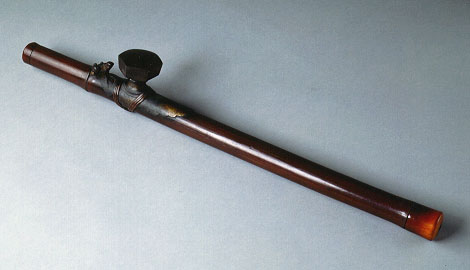

義助慰安婦 —— 李敖百件珍藏義賣藝術品（第73件） 品 名：H3. 台灣鴉片煙槍 預估價：40 萬 成交價：（保留） 說 明： 這是抽鴉片用的器具，屬本土化的文物。它珍貴的地方在於兩端皆由象牙製成。以前英國將毛絨賣給中國，但市場不大，因中國人不愛毛絨，後來改賣鴉片煙，而導致 150 年前爆發的中英鴉片戰爭。當時有部份的台灣人（連戰的祖父便是其中之一）支持鴉片政策，為的是幫助日本人腐化台灣人。 
這是抽鴉片用的器具，屬本土化的文物。它珍貴的地方在於兩端皆由象牙製成。以前英國將毛絨賣給中國，但市場不大，因中國人不愛毛絨，後來改賣鴉片煙，而導致 150 年前爆發的中英鴉片戰爭。當時有部份的台灣人（連戰的祖父便是其中之一）支持鴉片政策，為的是幫助日本人腐化台灣人。